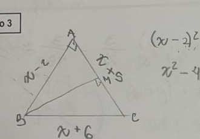
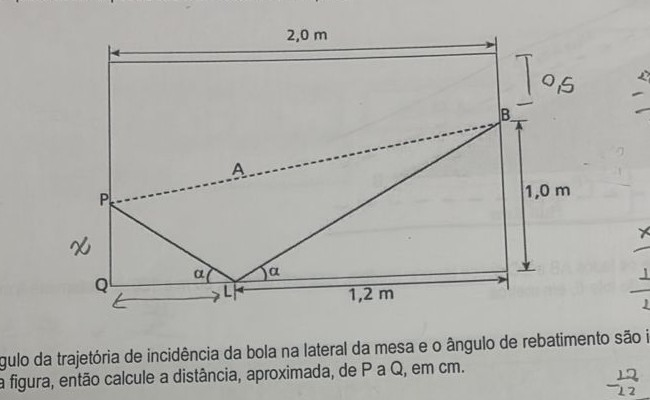
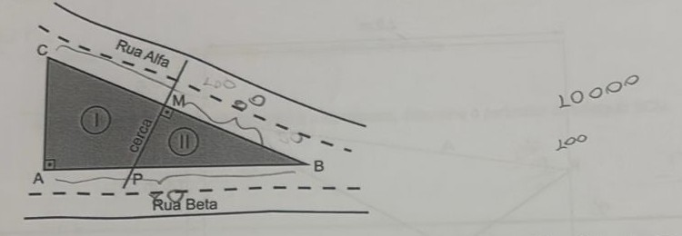

Professora: Juliana
Usando seus conhecimentos sobre produtos notáveis, responda:
a) Se x + y = 8 e que x.y = 15, calcule x² + y².
b) Se a + b = 6 e a² + b² = 90, calcule a.b
a) (x+y)²=x²+2xy+y² → 8²=x²+2(15)+y² → 64=x²+y²+30 → x²+y²=34.
b) (a+b)²=a²+2ab+b² → 6²=90+2ab → 36=90+2ab → 2ab=−54 → ab=−27.
De acordo com seus conhecimentos de fatoração de polinômios:
a) Simplifique a expressão
(x² − x − 2)/(x² + 2x + 1) · (3x + 3)/(x² − 2x)
b) Calcule o valor da expressão do item a para x = 452
a) Fatorando cada parte: x²−x−2=(x−2)(x+1); x²+2x+1=(x+1)²; 3x+3=3(x+1); x²−2x=x(x−2).
[(x−2)(x+1)/(x+1)²] × [3(x+1)/(x(x−2))] = simplificando (x−2) e (x+1)² em cima e embaixo → 3/x.
b) Para x=452: 3/452 (fração irredutível, já que 3 e 452 não têm fatores comuns) ≈ 0,0066.
Um triângulo ABC, retângulo em B, possui catetos (x − 2) metros e (x + 5) metros, com hipotenusa (x + 6) metros.

a) Calcule as medidas dos catetos e da hipotenusa, em metros.
b) Sabendo que BM é a mediana relativa à hipotenusa, determine o perímetro do triângulo BCM.
a) Pelo Teorema de Pitágoras: (x−2)²+(x+5)²=(x+6)². Expandindo: x²−4x+4 + x²+10x+25 = x²+12x+36 → x²−6x−7=0. Resolvendo: x=(6±√(36+28))/2=(6±8)/2 → x=7 (x=−1 não serve).
Catetos: x−2=5 m e x+5=12 m. Hipotenusa: x+6=13 m.
b) Como BM é a mediana relativa à hipotenusa (AC), M é o ponto médio de AC, e vale a propriedade: num triângulo retângulo, a mediana relativa à hipotenusa mede metade dela — BM = CM = 13/2 = 6,5 m. Com BC = 12 m (o cateto que forma o triângulo BCM):
Perímetro(BCM) = BC + CM + MB = 12 + 6,5 + 6,5 = 25 m.
A ilustração a seguir representa uma mesa de sinuca retangular, de largura e comprimento iguais a 1,5 e 2,0 m, respectivamente. Um jogador deve lançar a bola branca do ponto B e acertar a preta no ponto P, sem acertar em nenhuma outra, antes. Como a amarela está no ponto A, esse jogador lançará a bola branca até o ponto L, de modo que a mesma possa rebater e colidir com a preta.

Se o ângulo da trajetória de incidência da bola na lateral da mesa e o ângulo de rebatimento são iguais, como mostra a figura, então calcule a distância, aproximada, de P a Q, em cm.
Como os ângulos de incidência e reflexão em L são iguais, os dois triângulos retângulos formados (P-Q-L, de um lado, e B-canto-L, do outro) são semelhantes. Do lado direito: altura de B até a base = 1,0 m, e distância horizontal até L = 1,2 m. Do lado esquerdo: altura de P até a base = PQ (o que queremos), e distância horizontal QL = 2,0−1,2 = 0,8 m.
Pela semelhança de triângulos: PQ/0,8 = 1,0/1,2 → PQ = (0,8×1,0)/1,2 = 0,8/1,2 ≈ 0,667 m.
Convertendo para centímetros: PQ ≈ 66,7 cm.
Um terreno com formato de um triângulo retângulo será dividido em dois lotes por uma cerca feita na mediatriz da hipotenusa, conforme mostra figura.

Sabe-se que os lados AB e BC desse terreno medem, respectivamente, 80 m e 100 m. Determine a medida do perímetro do lote II, em metros.
Como o terreno é um triângulo retângulo e BC=100 é o maior lado, BC é a hipotenusa (ângulo reto em A). Pelo Teorema de Pitágoras: AC²=BC²−AB²=100²−80²=10000−6400=3600 → AC=60 m — um triplo pitagórico conhecido (60-80-100 = 3-4-5 ×20).
M é o ponto médio da hipotenusa BC: como todo ponto médio da hipotenusa de um triângulo retângulo é equidistante dos três vértices, MA=MB=MC=BC/2=50 m.
P está sobre AB e sobre a mediatriz de BC, logo PB=PC. Usando coordenadas A=(0,0), B=(80,0), C=(0,60): sendo P=(p,0), a condição PB=PC dá (80−p)²=p²+60² → 6400−160p+p²=p²+3600 → p=17,5. Assim, PB=80−17,5=62,5 m.
A distância PM (a própria cerca) é calculada entre P=(17,5;0) e M=(40;30) (ponto médio de BC): PM=√((40−17,5)²+30²)=√(22,5²+30²)=√(506,25+900)=√1406,25=37,5 m.
Perímetro do lote II (triângulo P-B-M): 62,5 + 50 + 37,5 = 150 m.